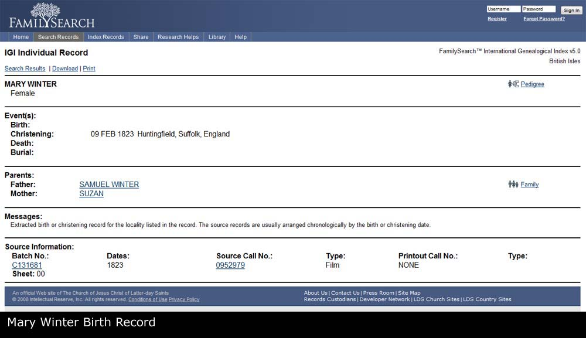

Family Record: William BYWATER x Mary WILLIAMS
Family Record: William BYWATER x Mary WILLIAMS - Overview
- Overview
- Chronology
- Pedigree
- Family Chart
- Descendants Chart
- Gallery
| Husband | William BYWATER b. Between 04/1820 and 1821 | |
| Wife | Mary WILLIAMS | |
| Change Date | Date | 14/04/2011 |
| Time | 14:06 | |
William BYWATER1, eldest child of George BYWATER and Jane EVANS, was born between 04/1820 and 1821 in Llangedwyn, Denbighshire, Wales. On 30/03/1851 William resided in Bryn, Llanyblodwel, Shropshire, England. Between 1854 and 07/1854 William married Mary. No children given. |  |  |
Notes
1. Born in Llanyblodwel, William's father has died before his 21st birthday He is seen again in 1851 living with mother and sister Martha in Llanyblodwel near niece Jane. In 1854 he marries Mary Williams.; [Note Record]
Web page generated using a registered copy of GedScape software, licensed by Mark Watkin
Web page generated using a registered copy of GedScape software (www.gedscape.co.uk), licensed to Mark Watkin